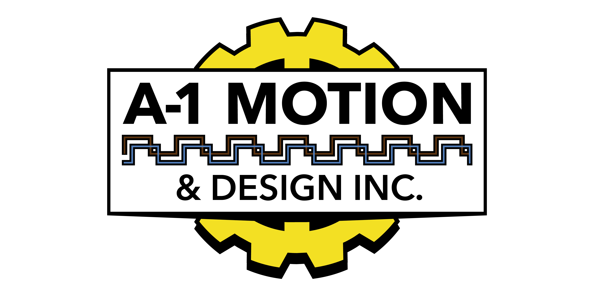

Jason Brazington's Resume

Summary
My career started in 1986 when I joined the US Navy as a submariner aboard the USS Norfolk Fast Attack submarine.
I am fortunate enough to have lived in a period that has witnessed an extreme revolution of computers and technology.
Work Experience
1986 - 1992 - UWFTG Advanced Electronics USS Norfolk USN
- Responsible for running the computer hardware for launch Controls
1992 - 1998 - AT&T Component level repair technician custom manufacturing line
- Troubleshoot and repaired failed boards manufactured on assembly line
1998 - 2005 - Industrial Controls Technician
- Program PLCs
- Repair Inverters
2005 - 2017 - Bardac regional manager
- Manage the southesast sales territory
2017 - present - A-1 Motion & Design owner and CEO
Skills